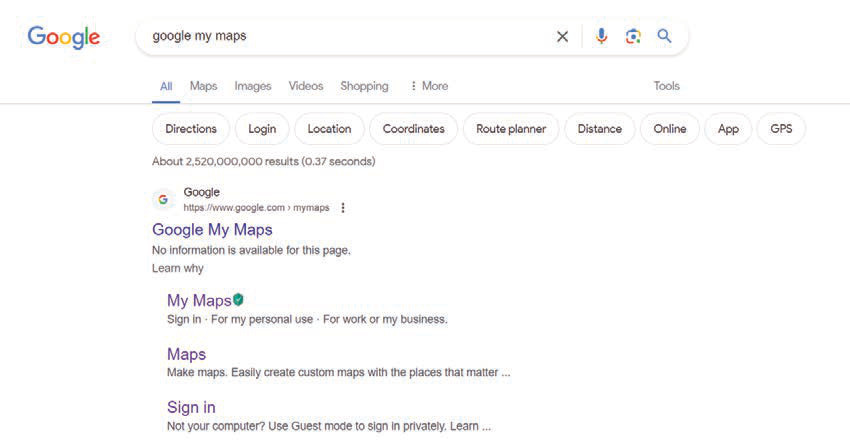

Things to consider
The following are some of the things to consider when drawing a digital map using “Google My Map” software:
- 1. Ensure you have access to a device such as a smartphone, tablet, or computer;
- 2. make sure the device is connected to the internet;
- 3. identify the geographical area you want to map, for example, country boundaries, roads, or lakes; and
- 4. make sure that you have a Google account by registering first. Use the “Google My Maps” software to register. This will allow you to create maps, including drawing shapes and adding important symbols of various features.
Steps for drawing maps using Google My Maps’ software
The following steps will guide you in drawing a map using Google My Maps software. The map of Swaga Swaga Game Reserve in Dodoma region is used as an example.
- 1. Open your browser and go to Google. Type “Google My Maps” into the search bar, as presented in Figure 7. Then, click on “My Maps” to open Google My Maps
